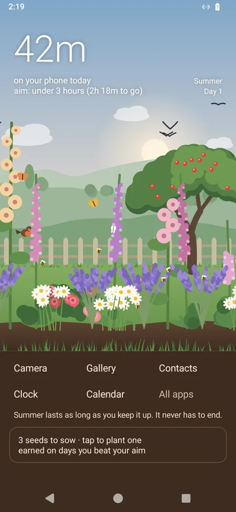
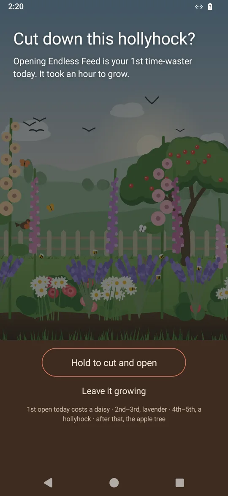
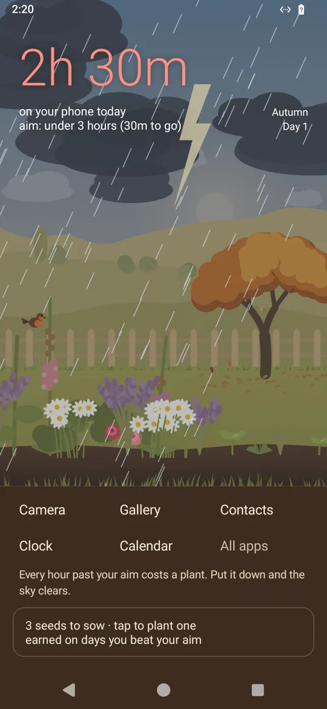

Your time, front and centreToday's screen time is the first thing you see each time you pick up your phone.
A garden that answers youUse your phone less than you used to and it grows. Use it more and it dies back.
Stays on your phoneYour screen time and your apps never leave it. No adverts, no accounts.
How the garden works
- It starts half-grown. Your past week, against your usual day before Glance, decides whether it grows or dies back.
- Each day has an aim. It starts a tenth under your usual day, and each time you beat it the next one steps down, until it's an hour.
- Each hour past today's aim cuts down a plant. It grows back after about a day off your phone.
- Nothing grows in the dark, so a night's sleep earns nothing. Time on your phone at night still counts.
- The weather is today: clear skies early on, rain past your aim, a storm at twice it. The season is your trend, and summer can last for ever.
- Days under your aim earn seeds. You choose the flower and where it goes.
- Robins, bees, butterflies, rabbits, hedgehogs, deer and fireflies come to a garden that's doing well.
A home screen with fewer distractions
- Up to five tools on the home screen, camera first. Swipe up for all your apps, with the keyboard ready.
- Sort your apps into three groups. Useful ones, like messages, maps and music, don't count towards your time.
- Time-wasters sit folded away at the bottom of the list, and each one costs a plant to open.
- The garden asks first however a time-waster opens: from a notification, a link or recent apps. It only sees which app is in front, never what's on the screen.
Why
I wanted to spend less time on my phone, and blocking apps never stuck. A garden I'd have to cut down to open them works better.